
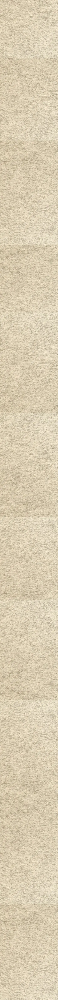


Arabella woke up in a hotel room.
For a few seconds, she did not move.
The ceiling above her was unfamiliar. So was the pale morning light slipping through the curtains, cutting thin golden lines across the carpet and the edge of the bed. Somewhere beyond the thick glass of the windows, the city had already begun its daily business. Cars passed below with the occasional soft hiss of tires against the road, while somewhere farther away, a horn complained about something that probably wasn't worth complaining about.
The room smelled faintly of expensive soap, freshly washed linen, and the cold air that came from the hotel's air-conditioning.
Arabella blinked.
Then she looked down at herself.
She was still wearing her clothes.
That was strange.
She slowly lifted her head from the pillow and looked around.
A bedside lamp stood on the table beside her, switched off. Her phone rested next to it, its screen dark. A glass of water sat untouched beside the phone, catching the morning light. On the other side of the room was a small writing desk with a chair pushed neatly underneath it, and beyond that, a television mounted against the wall that was currently displaying nothing but its own reflection.
There was a suitcase near the wardrobe.
She didn't remember putting it there.
Arabella frowned.
She tried to remember how she had gotten to the hotel.
Nothing.
She remembered pieces of the previous night, but they seemed to float around in her head without connecting properly. Faces. Conversation. The feeling of being tired.
Then nothing.
She sat up.
The mattress gave a soft sigh beneath her, and the sheets slid down around her waist.
That was when she noticed the cardboard beside her phone.
A letter rested on top of it.
Arabella picked it up.
Her name wasn't written on the front.
She turned it over anyway.
The handwriting was familiar.
Raymond.
She opened it and unfolded the paper.
Morning Bella, Mike here — I paid for your room. Don't worry about what happened last night, we left in separate rooms. I'm going to check on you at 10am. Enjoy the room.
Arabella read it once.
Then again.
Her eyebrows rose slightly.
She looked around the room.
"Separate rooms?"
A smile slowly appeared on her face.
Not because the message was particularly romantic.
It was the opposite.
There was something strangely fascinating about it.
Most men, she suspected, would have considered waking up in the same room with her an achievement. Raymond had apparently considered it a reason to find another room.
She folded the letter carefully and placed it on the table.
Her phone remained beside it.
Arabella glanced at the time.
She still had a little while before ten.
For the first time since waking, she began to relax.
The hotel room was almost unnaturally quiet now. The air-conditioning hummed steadily above her, occasionally clicking as the temperature changed. The curtains moved slightly from the ventilation, their fabric brushing against the window with a faint whisper.
It was one of those rooms designed to make a person forget where they were.
Nothing belonged to anyone.
The paintings on the walls had no personal meaning. The furniture had never belonged to a family. The bed had held hundreds of strangers, all leaving behind nothing more than fingerprints, perfume, forgotten receipts and the occasional stain housekeeping preferred not to discuss.
Arabella liked it.
There was something comforting about a place that expected nothing from her.
She got out of bed.
Her bare feet touched the carpet, soft and cool beneath her toes.
She stretched, then walked toward the bathroom.
The door opened with a quiet click.
Inside, everything looked almost offensively clean.
White tiles reflected the overhead lights. A wide mirror stretched above the sink, its surface perfectly clear. Two neatly folded towels waited beside the basin, while another set had been arranged near the bathtub with the precision of someone who had never experienced the chaos of actually using a bathroom.
There was a shower.
There was also a bathtub.
Arabella looked at the tub.
Then at the shower.
The decision lasted approximately one second.
The shower won.
She turned the handle.
For a moment, nothing happened except the pipes groaning somewhere inside the wall.
Then water burst from the showerhead.
Steam slowly began to gather across the mirror.
Arabella stepped beneath the warm stream.
The water struck her shoulders and ran down her back, washing away the stiffness of sleep. She closed her eyes.
This was her favourite part.
Not the hotel.
Not the room.
Not even the luxury.
The water.
There was something about standing beneath warm water that made the world temporarily irrelevant. No conversations. No expectations. No people asking questions. Just the steady rush against her skin and the soft echo of it filling the tiled room.
She breathed in deeply.
For a few minutes, she didn't think about where she had been the night before.
She didn't think about Raymond.
She certainly didn't think about the mysterious reason he had paid for her room and then slept somewhere else.
For a few minutes, there was only the water.
And, for Arabella, that was enough.

Raymond entered the room without knocking.
The door wasn't locked.
He pushed it open slowly and looked inside.
The bed was empty.
"Guess she's awake," he muttered.
He checked the time on his phone.
10:00 a.m.
Exactly.
Raymond had a habit of arriving when he said he would. Ten meant ten, not ten-oh-seven, not whenever he happened to feel like showing up.
He closed the door behind him and sat on the edge of the bed.
The room was still warm from the shower. A faint cloud of steam had escaped from the bathroom and settled around the doorway, carrying the floral scent of shampoo with it.
Raymond pulled out his phone.
He had barely started scrolling when he heard the shower stop.
A few moments later, the bathroom door opened.
Arabella stepped out, wrapped in a white towel.
She stopped when she saw him.
For half a second, genuine surprise crossed her face.
"Oh. Morning... Mike."
Raymond looked up from his phone.
"Morning."
Arabella glanced toward the door, then back at him.
"I didn't expect you to be here already."
"I told you I will check on you at ten."
"I didn't think you'd actually come at ten."
Raymond looked at the clock.
"I said ten."
That earned him a small smile.
Arabella walked toward the bed, her bare feet making almost no sound against the carpet.
Raymond caught the scent of her shampoo before she reached him.
"What a wonderful smell," he said. "Which shampoo did you use?"
"Flower's Love."
She picked up the bottle from the cardboard beside the bed and held it up.
"I love it."
She smiled and placed the bottle back down.
She picked up the lotion.
There was a small table in front of the bed, just large enough for her to rest one leg against.
Arabella knew Raymond was watching.
That was precisely why she chose that spot.
She squeezed some lotion into her palm and slowly rubbed it over her leg. She took her time with it, moving deliberately, occasionally glancing toward Raymond as though she were checking whether he had noticed.
He had.
She could tell.
But his expression didn't change.
Interesting.
Arabella continued.
She moved the lotion higher along her leg, revealing just enough to make the intention obvious without ever making it look deliberate.
Except it was deliberate.
She looked at him again.
Raymond was looking at his phone.
Her eyebrows lifted slightly.
She shifted her attention back to her leg and continued rubbing the lotion in.
Perhaps he hadn't noticed.
So she tried again.
A little slower this time.
Raymond finally looked up.
Their eyes met.
For a moment, Arabella waited.
Then Raymond's gaze moved away.
Not hurriedly.
Not awkwardly.
He simply looked away as though there had been nothing particularly interesting to see.
Arabella stopped.
That was new.
Most men required considerably less effort.
She lowered her leg and capped the lotion.
"What happened yesterday?" she asked.
Raymond looked at her.
"You fell asleep trying to drive my car."
Arabella's mouth curved into a small smile.
"Did I?"
"You did."
She studied him.
There was no accusation in his voice. No embarrassment. No attempt to make her feel guilty.
Just an answer.
She picked up the lotion again, mostly because she wanted to see whether he would look this time.
He didn't.
That was when her curiosity became genuine.
"I don't remember that."
"I know."
Raymond placed his phone beside him.
"I didn't know where you lived, so I brought you here."
Arabella studied his face.
He said it so naturally.
Almost beautifully, in fact.
It was a lie.
Raymond knew exactly where she lived. He could probably have described the front door, the driveway and the number of windows without needing to visit the place again. He even knew the colour of the bras she had bought the previous week.
But there was no reason for Arabella to know that.
And there was certainly no reason for Raymond to volunteer it.
They were licking each other's lips in the game of words now—not literally, of course. That would have been considerably less civilized.
It was the sort of conversation where two people smiled politely while quietly checking for weapons beneath the table.
"And you just happened to know this hotel?" Arabella asked.
"My mother likes it."
"Your mother?"
"Yes."
"And you decided to pay for two rooms?"
"For your safety."
Arabella smiled.
They were circling each other elegantly.
A lesser pair might have called it flirting.
These two were conducting an investigation with better clothes.
"That sounds very noble," Arabella said.
"It's practical."
"Practical?"
Raymond nodded.
"A wonderful lady such as yourself isn't suited to childish indulgences like having sexual intercourse while drunk."
Arabella's eyebrows lifted.
For a moment, she looked almost impressed.
It was as though Raymond had just been knighted for catching a bullet with his
chest and then politely asking whether the bullet was all right.
Raymond continued, perfectly calm.
"I would have felt terrible if something happened to you."
Arabella's smile changed.
It became smaller.
Quieter.
More interested.
She looked away for a moment.
A faint blush touched her cheeks.
"I hear you, Mr. Rollingson."
"Good."
The room fell quiet.
The air-conditioner hummed above them. Somewhere beyond the curtains, traffic continued its morning pilgrimage through the city. The hotel itself seemed content to pretend that nothing interesting was happening inside one of its rooms.
Unfortunately for the hotel, something very interesting was happening.
Arabella was studying Raymond again.
Not his face this time.
His personality.
His habits.
His boundaries.
His reactions.
She was scanning his soul as though it were a document she had been given five minutes to memorize.
Raymond noticed.
He didn't comment.
Instead, he asked, "Where are you going after this?"
"Home, probably."
"Probably?"
"Unless I change my mind."
There was something playful about the way she said it.
She was playing the long game now—the sort of game in which a woman could flip her hair and silently announce, You aren't getting this treasure, honey.
Raymond, however, appeared to have misplaced the map.
"Do you often change your mind?"
"Depends."
"On what?"
Or perhaps I should say Mike Rollingson asked.
Arabella shrugged.
"How I feel."
Raymond nodded.
"Do you usually make decisions based on how you feel?"
"Don't you?"
"Sometimes."
The answer seemed to settle something inside him.
Not because she had said anything extraordinary.
Quite the opposite.
It was the simplicity of the answer.
Raymond had been expecting a performance.
Instead, she had given him something that sounded almost ordinary.
And sometimes ordinary answers were the ones worth examining most carefully.
She laughed softly.
Raymond watched her reaction.
There it was.
She laughed easily, but he wasn't sure whether she was amused or simply responding because laughter was expected.
He leaned back slightly.
"Do you have many friends?"
"A few."
"Close friends?"
"Not particularly."
"Why?"
Arabella looked at him.
The conversation was beginning to resemble an interrogation room with better furniture. Good cop, bad cop, back and forth, except neither of them had bothered to decide which one was supposed to be good.
And, strangely enough, they seemed to be enjoying themselves.
"People are exhausting," Arabella said.
"Yet you seem to enjoy people."
"I enjoy observing them."
That answer made Raymond pause.
"Observing them?"
"Yes."
"What do you observe?"
Arabella thought for a moment.
"Mostly what they want."
"And how do you know what they want?"
"I ask."
"People don't always tell the truth."
"No."
She smiled.
"That makes it more interesting."
Raymond's expression remained neutral.
"And if you find out someone is lying?"
"I let them continue."
"Why?"
"Because sometimes people tell you more when they think you're believing them."
Raymond looked at her for a moment longer.
Something about the exchange landed strangely inside him.
It wasn't attraction.
It was closer to the feeling of receiving an unexpected kiss at a gathering full of friends—brief, surprising, and intimate enough to make you wonder whether it had actually happened or whether you had simply imagined the moment.
Except Raymond wasn't particularly interested in kissing her.
He was interested in the person who had just told him she enjoyed watching people lie.
Arabella smiled back.
"What?"
"Nothing."
"You're doing it again."
"Doing what?"
"Looking at me like you're trying to solve something."
Raymond's mouth moved into the faintest smile.
"Maybe I'm just trying to understand you."
"And have you?"
"No."
"That's disappointing."
"Why?"
"Because you're usually very observant."
Raymond leaned forward, resting his elbows on his knees.
"Who told you that?"
"Nobody."

"Then how do you know?"
Arabella picked up the lotion again.
She turned the bottle slowly between her fingers.
"Maybe I observe people too."
Raymond said nothing.
For a moment, neither of them did.
The air-conditioner hummed overhead, filling the silence with its monotonous mechanical breathing.
Outside, a vehicle passed beneath the hotel windows.
Inside, the room had become a chessboard.
The only difference was that these two players were waiting to move a piece without getting beheaded.
Raymond glanced at the clock.
Arabella noticed.
"You're leaving?"
"Yes."
"Already?"
"I have things to do."
She tilted her head.
"You're not curious anymore?"
Raymond looked at her.
"I didn't say that."
"You don't seem very curious."
"I am."
"Then why are you leaving?"
Raymond picked up his phone.
He noticed the question.
Not because it was complicated.
Because it was revealing.
"Because curiosity doesn't mean I have to stay."
Arabella stared at him.
There it was again.
That strange little refusal to behave the way she expected.
And that answer, more than anything else he had said that morning, seemed to interest her.
Raymond stood.
"I'll have someone take you home if you need it."
"I can manage."
"I know."
He walked toward the door.
Arabella watched him go.
She had expected something else.
She wasn't entirely sure what.
Most people wanted something from her when they behaved like Raymond had. Attention. Approval. Affection. Something physical. Something they could take home with them and convince themselves meant more than it actually did.
Raymond seemed to want none of it.
That was unusual.
And unusual things had a way of becoming interesting.
Raymond opened the door.
"Take care, Arabella."
She smiled.
"You too, Mike."
He left.
The door clicked shut.
Arabella remained where she was for several seconds, staring at it.
The room suddenly felt quieter.
The air-conditioner was still humming.
The shower was still dripping somewhere behind her.
The curtains still moved faintly with the hotel's ventilation.
Everything was exactly as it had been.
Except Arabella was smiling.
"Interesting."
Raymond walked out of the hotel with his phone in his hand.
The morning air was cooler than the hotel lobby, and for a moment he stood beneath the entrance canopy, looking down at his screen while deciding who to call.
"Good morning, sir."
Raymond looked up.
He knew the voice.
Standing beside a black SUV was Fairchild.
She had already opened the rear door for him.
Raymond stared at her for a moment.
"Fairchild."
She smiled.
She hadn't given up.
Apparently, some people treated rejection as a temporary inconvenience rather than an answer.
Raymond stepped into the SUV.
Clover closed the door behind him before walking around to the driver's side.
"How was your stay, sir?" she asked as she got in.
"Rather disappointing."
Clover adjusted the mirror.
"It's best to be disappointed while it's still early, isn't it, sir?"
Raymond looked at her.
She was watching him through the rear-view mirror.
He glanced back toward the hotel.
"It sure is, Fairchild."
Clover smiled faintly and started the engine.
The SUV rolled away from the hotel.
For several minutes, neither of them said much.
The city moved around them.
People were already beginning their morning routines. Shopkeepers raised shutters. Delivery trucks occupied half the roads with the confidence of men who believed traffic laws were merely suggestions. A woman walked along the pavement carrying a paper cup of coffee while talking loudly into her phone.
Raymond sat quietly in the back.
He had his phone in his hand.
Then he put it away.
Clover noticed.
She didn't ask why.
She had already been studying him since the moment she decided she wanted the position.
There were things Calson had learned about Raymond over the years.
Things that couldn't simply be written into a job description.
Calson had been with the family since Raymond was a lad. He knew which roads Raymond preferred, what annoyed him, when he wanted silence and, perhaps most importantly, how quickly Raymond could become sick in a moving vehicle.
The family had even kept a book for the next driver.
Calson's notes.
Not exactly a driver's manual.
More like instructions for surviving Raymond.
Clover had read every page she could get her hands on.
She had taken the job seriously.
And apparently, so far, she was doing well.
Raymond looked toward the side window.
The glass was closed.
Clover noticed immediately.
She lowered the window.
Cool air rushed into the vehicle.
She also eased her foot off the accelerator, slowing the SUV slightly.
Raymond looked toward the front.
"You can keep driving."
"I know."
"Then why slow down?"
"Because if I make you sick, I probably won't get the job."
Raymond looked at her through the mirror.
Clover kept her eyes on the road.
After a moment, Raymond looked away.
A small victory.
Clover didn't smile.
She knew better than to celebrate too early.
They continued through Milesmars.
The roads became quieter as the houses grew larger.
Tall walls.
Electric gates.
Perfect gardens.
Cars parked beneath expensive carports.
The kind of neighborhood where people paid enormous amounts of money to make sure nobody knew what happened behind their walls.
Then they saw the smoke.
At first, it looked like fog.
A thick grey cloud rising above the rooftops.
Clover slowed.
Raymond looked toward it.
A house was burning.
Flames climbed through the windows, turning the curtains into glowing ribbons before consuming them entirely. Smoke poured from the roof and rolled upward into the morning sky.
There were no fire trucks yet.
No crowd.
No frantic homeowner running into the street.
Just the fire.
And a girl.
She stood several metres away from the house, dressed entirely in black.
She wasn't running.
She wasn't crying.
She wasn't calling anyone.
She simply watched.
Clover slowed the SUV even further.
Raymond looked at the girl.
The girl looked at Raymond.
Their eyes met through the open window.
For several seconds, neither of them looked away.
There was something unnerving about her expression.
Not panic.
Not fear.
Not even regret.
Nothing.
She watched the house burn as calmly as someone watching a film they'd already seen.
Raymond studied her face.
The flames reflected faintly in her eyes.
She didn't look ashamed.
She didn't look frightened by what she had done.
There was no desperate attempt to pretend she was innocent.
No guilt.
No performance of guilt.
Just a girl in black standing beside a burning house in broad daylight, watching her work disappear into smoke.
Clover glanced at Raymond.
"Should I stop?"
Raymond continued looking at the girl.
"No."
The SUV rolled forward.
The girl remained where she was.
Raymond turned his head slightly as they passed.
For one last moment, their eyes met.
Then the burning house disappeared behind them.
Clover kept driving.
Neither of them said anything.
The morning continued as though nothing unusual had happened.
Just another Tuesday.
-----------
Thirty minutes later, Raymond and Clover arrived home.
The black SUV rolled through the gates and up the long driveway before coming to a smooth stop in front of the house.
Clover shifted the car into park.
Raymond opened the door.
"You should drive the Ferrari back to CarsForHire," he said as he stepped out. "Tell him I enjoyed it."
"Yes, sir."
Raymond closed the door.
Clover watched him through the windshield for a moment before starting the engine again.
Raymond walked toward the house.
Two guards stood on either side of the entrance, dressed neatly and standing with the kind of posture that suggested they had been trained to remain statues until something worth reacting to happened.
As Raymond approached, both men nodded.
Raymond returned the gesture.
One of the guards reached for the handles of the enormous double doors.
They opened inward.
The entrance hall waited beyond them.
Cool air met Raymond's face as he stepped inside, carrying with it the faint smell of polished wood and whatever expensive cleaning product the household staff had decided was appropriate for the morning.
His footsteps echoed lightly across the floor.
The doors closed behind him.
For a moment, everything appeared normal.
Which was usually when something was wrong.

In Helen's Field
Further north, where mountains rose like old men who had forgotten how to sit down, there was a place known as Hele's Field.
It was a region of miners, volcanoes, dry grass and enough gold beneath the earth to make otherwise sensible men behave like complete lunatics.
Some knew the place simply as Hugo's Estate.
And standing proudly within it was the house of Hugo Cavendish.
Those who did not know him particularly well called him Hugo.
Those who did usually remembered the rest.
Hugo the Third.
His estate stretched across the northern hills, an enormous piece of land where business rarely stopped merely because the sun had decided to go down. Trucks travelled along the private roads in both directions, some arriving empty and others leaving heavy enough to make their suspension complain. Workers moved between buildings. Engines growled. Crates were carried. Doors slammed.
And underneath all of it was the same old reason.
Gold.
The precious metal had a peculiar talent for turning quiet places into busy ones.
A black Cadillac SUV rolled through the estate, its tyres crushing the dry grass that had wandered onto the road. Dust lifted behind it in a thin brown cloud before the wind carried it away.
The mansion waited at the end of the long drive.
It stood tall against the landscape, elegant enough to look almost ridiculous beside the mountain behind it.
And behind the mountain was the volcano.
It had frightened enough people over the years to persuade entire families to pack their belongings and move somewhere less likely to suddenly become a geological obituary. The volcano remained where it had always been, smoking quietly in the distance as though it had never been accused of anything.
The Cadillac stopped in front of the mansion.
Two men stepped out.
For a moment, it looked as though one man had simply stepped out twice.
Cobb and Carl Doyley.
Brothers.
Identical brothers, in fact, which was unfortunate for anyone who intended to tell them apart from a distance.
They shared the same face, the same height, the same deliberate stride, and the same habit of walking as though the world had already agreed to move out of their way.
Both wore long charcoal overcoats hanging open over dark pinstriped three-piece suits. Their pale striped shirts were fastened neatly at the collar, each held in place by a small pin. A watch chain crossed each waistcoat, catching the low sunlight whenever either man moved.
If clothing was a language, the Doyleys were speaking in complete sentences.
Cobb walked ahead.
He was bareheaded, despite the cold wind travelling down from the mountains. His hair remained remarkably undisturbed, as though even the weather understood that there were certain men one simply did not argue with.
In his left hand he carried a black briefcase.
It swung very little.
That was either because it was heavy or because whatever was inside was important enough to deserve respect.
Perhaps both.
A cigarette rested between the fingers of his right hand. It had burned almost to the end, forgotten there while he walked. A thin ribbon of smoke curled upward and disappeared into the cold air.
His eyes remained fixed on the ground several paces ahead.
Not because there was anything particularly interesting about the grass.
Cobb simply looked like a man who had already decided how the day was going to end and was now merely walking toward the appropriate location.
Carl followed half a step behind him.
Their coats moved together.
Their shoes struck the ground almost in rhythm.
Even their shadows seemed reluctant to separate.
From a distance, they looked less like two brothers and more like two versions of the same decision.
The land fell away behind them into a pale blue haze. Far below, the town disappeared beneath smoke and distance, its buildings reduced to little more than vague shapes against the horizon.
The dry grass bowed beneath the cold wind.
Somewhere farther across the estate, a truck engine coughed, struggled, and eventually roared back to life.
Cobb took another drag from his cigarette.
Carl said nothing.
Neither did Cobb.
There was no particular need for conversation.
Brothers who think alike have very little use for explanations. They can spend an entire walk in silence and somehow still manage to disagree with each other perfectly.
The mansion grew larger with every step.
The black briefcase remained firmly in Cobb's hand.
Whatever was inside it, the Doyley brothers had brought it for Hugo Cavendish.
And judging by the way they were walking toward his front door, it was probably not a gift.
The Doyley brothers entered the mansion without so much as a glance at the furniture.
Two guards were waiting for them.
They did not ask many questions.
Men who worked for Hugo Cavendish had learned that there were certain visitors one did not interrogate in the hallway. One simply accompanied them and let Hugo decide whether they were worth keeping alive.
The guards led Cobb and Carl through the mansion, past polished floors and tall windows, through another corridor and eventually toward the back of the house.
A door opened.
The landscape changed immediately.
The mansion disappeared behind them, replaced by cold air, dry earth and the faint metallic smell of the mountains.
There was an entrance farther down the property.
Not to another building.
To a cave.
More precisely, an abandoned mine.
Hugo had done something rather unusual with it.
Most people saw an abandoned mine and thought of collapsing tunnels, bad memories and an excellent place to lose a body.
Hugo saw an office.
The mine entrance opened beneath the mountain, its mouth dark against the pale landscape. Old railway tracks disappeared into it, two rusted lines stretching into the darkness.
The guards stopped at the entrance.
Cobb continued walking.
Carl followed.
Neither brother seemed particularly impressed by the fact that they were about to walk into a mountain.
The darkness swallowed them within a few steps.
Their shoes struck the old wooden sleepers beneath the rails.
Clack.
Another step.
Clack.
The sound travelled ahead of them, bouncing against the walls before returning in distorted little echoes.
The temperature dropped as they went deeper.
The smell changed too.
Damp stone.
Old metal.
Dust.
And something else beneath it all—the stale scent of a place that had been underground for far longer than most men would have found comfortable.
The tunnel narrowed.
The ceiling lowered.
Their footsteps became the loudest thing in the world.
Then, far ahead, a small collection of lights appeared.
At first they looked like stars.
Then they became lamps.
Then an office.
The railway tracks continued straight toward them, disappearing beneath a desk at the end of the tunnel.
And behind that desk sat Hugo Cavendish.
He sat comfortably in a large chair as though the abandoned mine had been constructed specifically for his convenience.
The office had been carved into the end of the tunnel, surrounded by rough stone walls that had never bothered pretending to be elegant. Lamps hung overhead, throwing warm pools of light across the desk. Papers were arranged neatly in front of Hugo.
The absurdity of it all was almost impressive.
A man could own a mansion above ground and still decide that his best office belonged underneath a mountain.
Perhaps Hugo simply liked having somewhere where nobody could accidentally drop by.
Cobb and Carl stopped several feet from the desk.
Carl looked back toward the tunnel.
The guards were still standing at the entrance.
He smiled.
"I'll go have a little chat with the big boys at the door," Carl said. "They seem friendly enough, brother."
Cobb looked at him.
"Don't be a stinky skunk, Doyley."
Carl gave him a grin.
"Don't be a girl in there, hey."
He turned and began walking back down the tracks.
His footsteps slowly disappeared into the tunnel.
Clack.
Clack.
Clack.
Cobb reached the office, it had no door.
Hugo kept reading.
Cobb sat down opposite him.
Hugo did not look up.
Not once.
In the Kazersdale mansion
Raymond was in his room, lying across the bed with a book open in his hands.
Outside, rain had finally arrived in Kingsmere.
He had been waiting for it.
For days, the city had carried on beneath a sky that seemed to have forgotten how to empty itself. Now the rain came down steadily against the windows, tapping against the glass with the patience of someone who had nowhere else to be.
Raymond enjoyed the sound.
There was something cleansing about rain.
Perhaps Kingsmere needed it.
The city had accumulated enough deeds to wash away.
He turned another page.
For a while, there was nothing else.
No questions.
No drivers.
No family business.
No Alex.
Just the book, the rain and the rare luxury of being left alone.
Raymond was enjoying his little escape from civilization when someone knocked on the door.
He looked toward it.
"Come in."
The door opened.
Max stepped inside.
"Afternoon, sir."
Raymond lowered the book slightly.
"We have an issue we wish you to come and see."
"What is the issue, Max?"
Max hesitated.
It was only for a moment, but Raymond noticed.
"I think it's best if you hear it from Alex herself."
Raymond studied him.
Max had a slight smile on his face.
That was rarely a comforting sign.
"I'll be there."
He closed the book and placed it on the bed.
His shoes were sitting beside the mattress. He slipped them on without bothering to lace them properly and followed Max out of the room.
The rain continued tapping against the windows behind them.
Whatever peace Raymond had been enjoying had officially been murdered.
The two eventually reached the Oubliette.
The room was as busy as ever.
Alex was sitting in front of the enormous television, watching the screens while the geeks worked around her. Monitors glowed across the room, keyboards clicked, cables disappeared beneath desks, and several people were staring at enough information to make an ordinary person's brain request compensation.
"Afternoon, sir," Alex said.
Raymond looked around.
"Alex, can you tell me why I'm here licking the floor?"
There was a pause.
He wasn't being entirely metaphorical.
A particularly unfortunate patch of the floor had been introduced to urine, and Raymond was apparently being brought dangerously close to becoming acquainted with it.
Alex didn't answer immediately.
Instead, she looked toward Max.
"Max, show me him."
Max turned toward one of the geeks.
"Bring it up."
The geek began typing.
A few seconds passed.
Then he stopped.
"Password."
Max looked at Alex.
Alex looked at Max.
Raymond looked at both of them.
The room became very quiet.
"What the fuck?" Raymond said.
The geek looked between them.
"Ma'am... what's the password?"
Alex straightened in her chair.
For the first time that afternoon, she looked genuinely bothered.
Not angry.
Not confused.
Just deeply uncomfortable that this particular question had arrived in front of Raymond.
She cleared her throat.
"H.A.N.G.R.A.Y.7.7.7."
Max smiled.
Raymond stared at her.
The geek entered the password.
The screen unlocked.
Nobody said anything for a moment.
Somewhere in the room, a keyboard continued clicking.
Raymond slowly looked at Alex.
Alex looked at the screen.
The rain outside suddenly seemed very peaceful again.
Raymond looked at Alex.
She looked back at him.
"I'm filled with hate," she said, "but in a cute way."
"Yeah," Raymond replied. "Cute demon."
Max cleared his throat and turned toward the screen.
"All of our deliverymen are supposed to be here today," he said, "but one of them is not."
Raymond's attention shifted toward him.
"When I checked his location, he was in DizzyDean's territory."
Raymond looked back at Alex.
"How is it that whenever you're out partying, the next day we have a problem with something?"
Alex leaned back in her chair.
"Let's remember that I'm only doing this because you don't feel like doing all this shit, brother."
Raymond exhaled slowly.
It was the sort of exhale a man made when he had just been reminded of an argument he had already lost several years ago.
Max looked at him.
"Sir, what do we do about this?"
Raymond turned toward the door.
"Alex will handle it."
He had taken barely two steps when something flew across the room.
A banana.
It struck him directly in the back of the head.
Raymond stopped.
The room went silent.
The banana dropped to the floor.
Alex stared at him.
"Helpless fuck."
Raymond slowly turned his head.
"One of these days, I will take you to a therapist."
He paused.
"If not, then a mental asylum."
Alex pointed at him.
"Don't make me poison you."
Raymond stared at her for another second.
Then he turned and walked out of the Oubliette.
Some families showed affection through hugs.
The Kazerdales apparently preferred threats, fruit and the occasional suggestion of institutionalisation.
Max followed Raymond out.
Once they were in the corridor, he lowered his voice.
"Sir, I really think it would be best if you handled this one."
Raymond glanced at him.
"Alex is not in the right state to handle this."
Max gave a small nod.
"We both know that."
Raymond continued walking.
"I'll be heading to a nearby fruit store."
Max looked at him.
"Fruit store, sir?"
"I need grapes."
He continued down the corridor as though this were the most reasonable response to a missing deliveryman.
"I'll bring some for you if I find any."
Max smiled.
"So that Alex has not indulged herself into this work?"
Raymond looked back at him.
"Precisely."
Max nodded solemnly.
"It shall be so, sir."
Raymond walked away.
Max remained behind for a moment, watching him disappear down the corridor.
There was something reassuring about watching Raymond walk toward a problem.
Not because problems usually became smaller around him.
They simply became more interesting.

In Hugo's Office
The pages in his hand received the same attention they had received before Cobb arrived, his pencil moving occasionally across the paper as though the man sitting opposite him were no more urgent than a fly that had landed on the wall.
Then the telephone rang.
The sound cut through the office.
Ring.
Hugo continued reading.
Ring.
Still nothing.
On the third ring, he lifted the pencil slightly and pointed toward the candlestick telephone without taking his eyes from the page.
"That will probably be for you."
Cobb looked at the telephone.
Then he looked back at Hugo.
He did not move.
Hugo turned another page.
It was a small thing.
Almost nothing.
But it was also the sort of thing powerful men enjoyed doing to other powerful men.
Hugo was not going to give Cobb his attention simply because Cobb had arrived. If Cobb wanted it, he could come and collect it.
Attention, in Hugo's office, apparently had an admission fee.
Cobb stared at him.
His face did not move.
No irritation.
No smile.
No impatient tapping of fingers.
Nothing.
The telephone rang again.
Hugo continued reading.
Thirty seconds passed.
Then Cobb finally stood.
He walked over to the telephone, picked up the receiver and held it to his ear.
"Hello."
He listened.
"Roger. How much?"
Silence.
Cobb's eyes remained on the far wall.
"I understand."
He placed the receiver back onto its cradle.
Then he returned to his chair and sat down exactly as he had before.
Hugo finally lowered the paper.
"Right," he said.
He placed the pages on the desk.
"That will be your money."
For the first time since Cobb had entered, Hugo lifted his boot from the desk.
He settled properly into the high-backed chair, his shoulders resting against it as his hands came together on the desk.
The transformation was subtle.
A man who had been reading had become a man who was conducting business.
"Now," Hugo said, "let's talk business."
He looked directly at Cobb.
"What do you have for me?"
Cobb held his gaze.
For several seconds, neither man moved.
Then Cobb broke eye contact.
Not by looking away completely.
Just sideways.
A brief glance.
Then downward.
His left hand reached beside his chair and found the black briefcase.
The choice of hand was not accidental.
Cobb Doyley was left-handed.
There was something faintly unsettling about watching a man like him open a briefcase with his left hand. Perhaps because the hand that reached for it was also the hand that carried the things he intended to use when conversations stopped being pleasant.
The latches clicked open.
Inside were several things.
Three guns.
Perhaps four.
A few daggers.
All arranged neatly enough to suggest preparation rather than panic.
They were not displayed like trophies.
They were simply there.
Waiting.
The sort of objects that remained completely silent until the moment something gave them a reason not to be.
Cobb removed a single sheet of paper.
He closed the briefcase and placed it on the floor beside him.
Then he pushed the paper across the desk.
"Signed by the Minister of World Affairs himself."
Hugo picked it up.
His eyes travelled down the page.
The room became quiet again.
Even the mine seemed to hold its breath.
Hugo reached the bottom of the document.
He looked at it once more.
"This means the payment is thirty-five percent higher than last time," he said.
Cobb nodded.
"No matter the situation you're facing."
Hugo's eyes remained on the contract.
For a moment, Cobb watched him.
Then Hugo leaned back slightly.
"You know what?"
He lifted the contract.
"I won't have my lawyer look at that."
Cobb's expression remained unchanged.
Hugo simply reached up.
Two fingers found the brim of his hat.
And he gave it one slow, deliberate nod.
That was the whole sentence.
Done.
The lamplight caught the side of his face as his head dipped—the trimmed beard, the sharp line of his jaw, the shadow of the brim swallowing everything above the nose.
A thin gold chain hung loose against his open collar.
A ring glinted on the hand holding the hat.
Behind him, the little porcelain drawer pulls glowed faintly against the dark wood.
They looked almost like a row of pale eyes watching the deal close.
And somewhere beyond the office, deep inside the mountain, one of the timber supports gave a long, quiet groan.
Neither man acknowledged it.
There were more important things collapsing than a mine.
"There is one thing, though," Hugo said.
He looked at Cobb.
"We need to discuss something."
Cobb's eyes moved past him.
Behind Hugo hung a painting.
It depicted a man being skinned alive.
Not particularly tasteful.
Then again, neither was the mine.
Cobb studied the painting for a moment, his expression remaining still. The artist had apparently decided that subtlety was for people with less interesting hobbies.
Hugo picked up the contract again.
"It says here forty-five percent is the payment you're getting."
His fingers moved slowly through his beard.
A small gesture.
Almost absent-minded.
But Cobb noticed it.
Hugo was thinking.
Or perhaps simply soothing himself while he decided how much money he was willing to part with.
"I know you've already made our fifteen percent payment ready," Cobb said. "The guy on the telephone told me."
Hugo's hand stopped in his beard.
He stood.
Slowly.
There was no sudden movement, no slammed fist, no raised voice.
He simply rose from the chair and walked around the desk with the contract in his hand.
Then he leaned forward.
He placed the contract directly in front of Cobb.
Close.
Much closer than necessary.
Hugo had stepped into Cobb's personal space deliberately.
It was the sort of move men sometimes made when they wanted to see whether the other man would retreat.
Cobb did.
Not with his body.
His eyes.
He looked away.
People have a curious habit of blocking their eyes when they dislike what they are seeing. Sometimes they close them. Sometimes they turn their heads. Sometimes they simply find something else to look at.
Cobb chose the latter.
His attention settled briefly on the painting again.
Perhaps being stared at by a dead man was preferable to being stared at by Hugo.
"I like your little forty-five percent payment," Hugo said. "But this isn't a job worth that much of a raise."
Cobb looked back at him.
"The gold was stolen from Stephenhood's home."
Hugo remained leaning over the desk.
"Then the house was set ablaze," Cobb continued, "with his furniture in it."
His voice stayed remarkably calm.
"And his daughter in it."
Hugo's expression changed slightly.
Cobb noticed.
"A different nuisance," he added.
The words hung between them.
"The idiots who did it then robbed Kazerdale's delivery white van."
Hugo slowly straightened.
"That van disappeared out of thin air the last time I checked."
Cobb leaned back in his chair.
His eyes remained on Hugo now.
"So either we get a raise…"
A pause.
"…or you get a priest for your funeral, Mister Cavendish."
Silence.
The lamps hummed softly above them.
Somewhere beyond the walls, the mine creaked.
Hugo stared at Cobb.
Then he sighed.
"I'm paying forty percent."
Cobb waited.
"Twenty and twenty," Hugo continued. "A perfect share between you and your brother."
Cobb considered him for a moment.
Then he nodded.
"It's a deal."
Hugo extended his hand.
Cobb stood.
The two men shook hands across the desk.
It was a firm handshake.
Professional.
Almost respectable.
The sort of handshake two businessmen might exchange after solving a difficult problem.
Except these two had just negotiated the price of recovering stolen gold while standing beneath a mountain, beside a painting of a man being skinned alive.
Business had simply developed a rather unusual dress code.
Cobb released Hugo's hand and turned toward the tunnel.
He walked away from the office without another word.
His footsteps began echoing through the mine.
Clack.
Clack.
Clack.
When Cobb finally emerged from the tunnel, he found Carl exactly where he had left him.
The guards were still there.
Except Carl had apparently decided that waiting was boring.
He was playing cards with them.
Cobb stopped.
For a moment, he simply watched.
Carl placed a card down.
One of the guards groaned.
The other stared at his hand as though the cards had personally betrayed him.
Carl grinned.
He was winning again.
Cobb looked at him.
"Done, Doyley?"
Carl glanced up.
"You're done?"
"Forty percent."
Carl's eyebrows lifted.
Then he looked down at his cards.
"Are you losing a game?"
Cobb stared at him.
Carl smiled.
"It's a sign."
"A sign of what?"
"That we're getting forty percent instead of fifty."
Cobb gave him a look.
Carl stood and gathered the cards.
"Well," he said, "our job's done."
He handed the deck back to one of the guards.
The two brothers turned toward the estate.
The gold was still missing.
Somewhere out there, people were already spending it, hiding it, moving it, or preparing to kill for it.
The Doyleys had been paid to find it.
And now they had something worth hunting.
At the Fruitstore
Raymond sat in the car for a moment.
Rain hammered against the roof and windshield, the sound so constant that it had begun to resemble static. What had started as a gentle shower earlier in the morning had developed into something considerably more determined.
It was getting heavier.
Water streamed down the windows in crooked paths, distorting the buildings and streetlights outside until Kingsmere looked like a city trapped beneath a layer of glass.
Raymond watched it for a few seconds.
Then he reached for the door.
He opened it and immediately felt the cold rain strike his sleeve.
"Wonderful."
He leaned across the seat, took an umbrella from the side of the car and stepped out.
The rain intensified almost immediately, drumming against the umbrella as he opened it.
Raymond stood beside the car for a moment and looked upward.
The clouds were moving quickly.
Dark masses rushed across the sky, sliding over one another as though they were red blood cells travelling through a vein while being chased by a serial killer.
The comparison was unnecessarily dramatic.
Raymond appreciated it anyway.
He crossed the street.
Cars moved through the rain with their headlights glowing through the mist, tyres spraying water across the road. Pedestrians hurried along the pavements, some with umbrellas, others with jackets pulled over their heads and the expression of people who had underestimated the weather.
Raymond had nearly reached the other side when he heard someone behind him.
A woman was walking in the same direction.
She was talking on her phone, holding it close to her ear with one hand while trying to keep her umbrella steady with the other.
The wind had other plans.
A sudden gust tore the umbrella from her grip.
It flew sideways.
The woman turned instinctively after it.
The umbrella bounced once against the wet pavement before sliding toward the road.
An approaching car was already there.
Its tyres hissed against the rain-soaked asphalt.
The umbrella lifted from the ground and landed directly across the car's windshield.
The driver reacted immediately.
The car swerved.
The woman stepped toward the road without looking.
Raymond saw it before she did.
He moved.
His hand caught her arm and pulled her sharply backward.
The car passed them with a violent rush of water and sound.
Raymond's shoulder slammed against the pavement.
The woman's phone flew from her hand and struck the ground.
Crack.
The screen shattered.
For a moment, neither of them moved.
The rain continued falling.
The woman stared at the road.
Then at Raymond.
Then at the phone lying several feet away.
She looked down at herself.
She was still alive.
Which was generally considered a pleasant discovery.
Raymond had one arm around her waist, keeping her upright beneath the umbrella.
Her black dress was soaked at the edges, the fabric clinging slightly from the rain. Against the grey afternoon and wet pavement, the black made her stand out almost unnaturally.
She looked at him.
"Thanks for that," she said.
Her eyes moved toward the broken phone.
"Even though you broke my phone."
Raymond glanced at the pavement.
"I can buy you another phone."
She looked back at him.
"At the nearby store?"
"Yes."
The woman considered that.
"That would be nice."
Raymond released his arm from around her waist once he was certain she was steady.
He looked at his watch.
Then toward the street ahead.
"Let me first buy something here."
The woman followed his gaze.
They were already standing directly in front of the fruit shop.
Rainwater ran along the edge of the pavement beside them.
Raymond opened the door.
The woman followed him inside.
And somewhere beneath the sound of the rain, Raymond's afternoon had just acquired another complication.
They entered the store.
It was considerably larger than Raymond had expected.
Rows of fruit filled the shelves and wooden displays throughout the shop—apples, oranges, grapes, pears and things Raymond couldn't immediately identify without asking somebody who worked there. Along one side was a long counter where fresh fruit juices were prepared and served.
It had the atmosphere of a bar.
Only with fewer regrets and considerably more vitamin C.
Raymond walked toward the counter.
A man behind it was polishing a glass with a white cloth, giving it the sort of attention usually reserved for objects that were expected to survive several years of use.
Raymond took a seat.
"Give me two glasses of orange juice," he said, "and two hundred crowns' worth of grapes."
The woman sat beside him.
For a moment, neither spoke.
Raymond looked at her.
She was already looking at him.
Not nervously.
Not awkwardly.
Just watching.
She didn't appear to be waiting for him to rescue the conversation. She simply seemed perfectly comfortable allowing silence to exist between them.
A minute passed.
Then another.
They continued looking at each other.
The bartender placed two glasses on the counter.
Neither of them looked at them.
"The grapes will be here in a minute," the bartender said.
Raymond nodded without taking his eyes away from the woman.
"I know you."
The woman's expression barely changed.
Raymond reached toward his orange juice, picked up the glass and took a slow drink.
"You haven't been behaving lately."
He placed the glass down.
"Scorching houses?"
Their eyes met again.
The woman finally glanced toward her drink.
"Just ruining the evidence."
She picked up the glass but didn't drink.
"It's my hobby."
Raymond smiled faintly.
"So what do they call you, then?"
She turned her head toward him.
"Call me whatever you want."
That earned a small smile from Raymond.
Not amusement exactly.
Something closer to genuine fascination.
The woman smiled back.
Neither looked away.
"Lucille," Raymond said.
He paused.
"You seem like a wonderful lady."
Lucille lifted an eyebrow.
"I am a good girl."
She finally took her orange juice.
"Until you tease me, Mr. Kazerdale."
Raymond's expression changed slightly at the name.
She knew exactly who he was.
That was interesting.
Lucille raised her glass.
"A toast?"
Raymond looked at her glass.
Then at her.
The rain continued beating against the windows behind them.
Outside, Kingsmere was being washed clean.
Inside, two people who had met beside a nearly fatal accident were calmly drinking orange juice together as though this were the most ordinary introduction in the world.
"I like your personality," Raymond said.
"Thanks."
Lucille raised her glass.
"It's a disorder."
Their glasses touched.
Clink.
They drank together.
For two people who had met because one had nearly been run over in the rain, they were becoming remarkably comfortable with each other.
Lucille placed her glass down first.
"My employer has business with you."
Raymond looked at her.
"I'm listening."
"Your father owed him."
Raymond's expression became slightly more attentive.
"And now he wants his payment."
"How much?"
Lucille smiled.
"Not money."
She leaned slightly toward him.
"A job."
Raymond waited.
"He wants you to kill Hugo Cavendish."
The words landed between them with considerably less drama than they deserved.
Raymond took another sip of orange juice.
He considered her for a moment.
"It would have been better if he sent you with that perfect attitude of yours to do the work yourself."
Lucille smiled.
"Set the whole place ablaze while you're at it, my lady."
She laughed softly.
"I like men with massive, throbbing vocabularies."
Raymond stared at her.
"I have never felt so queer in my life."
They were getting along beautifully.
Throwing roses at each other's feet with words, metaphorically rubbing baby oil all over the conversation and somehow making a discussion about murder sound like a particularly strange courtship.
The bartender wisely decided not to participate.
Lucille took another sip.
"You should go check your mother's old delivery shop."
Raymond's smile faded slightly.
"Why?"
"Maybe then you'll understand how important this is to us."
She placed her glass down.
The words were lighter than the message behind them.
Raymond watched her carefully.
Lucille stood.
She moved closer.
Then closer still.
Raymond remained seated.
Lucille reached toward his neck.
Her fingers rested there gently.
Not squeezing.
Not threatening.
Just enough contact to make the gesture impossible to mistake for an accident.
She leaned toward him.
Then kissed him.
It was brief, but deliberate.
When she pulled away, she remained close enough for him to hear her over the rain.
"I can already taste the emptiness you'll bring."
Then she stepped back.
Lucille turned and walked toward the door.
Raymond watched her leave.
For a moment, his attention followed her entirely—the movement of her dark dress, the rain catching in her hair, the wind pushing it across her face as she stepped outside.
Then the door closed.
Raymond remained where he was.
The bartender approached.
He slammed the bag of grapes onto the counter.
Thump.
Raymond looked at it.
Then at the bartender.
"Thanks."
The bartender nodded.
Raymond smiled faintly.
"Now that's what I want."

.png)
.png)
.png)

.png)